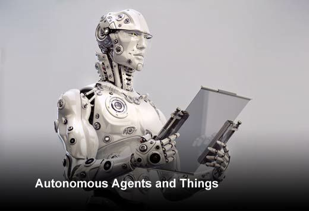
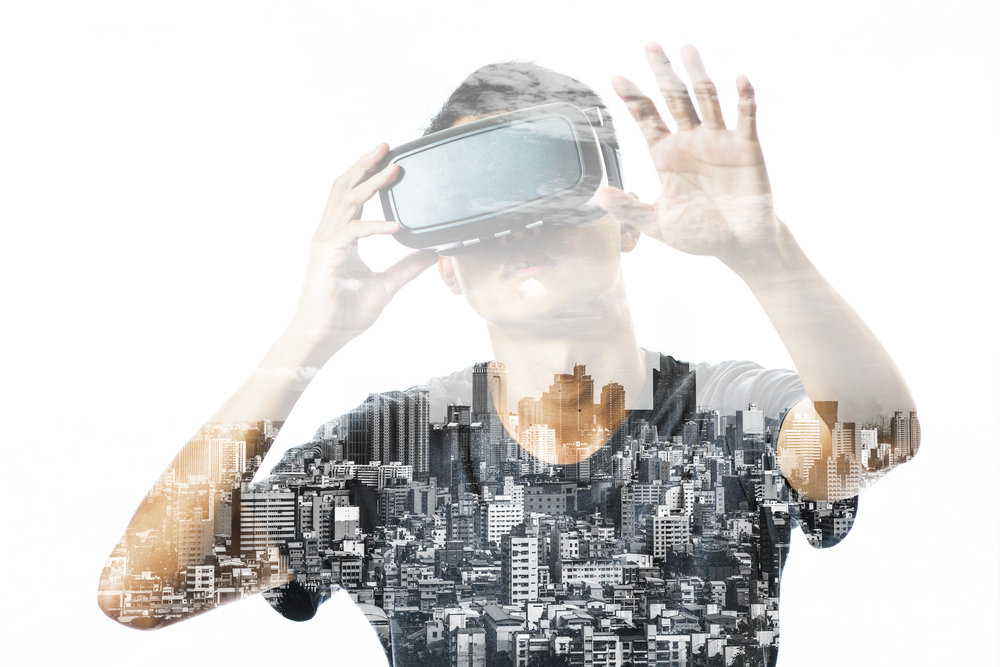

CCS
Corks Consulting Service
Who are we ?
We are a private irish run consulting service based in Co.Cork Ireland whom specilises in BlockChain, Autonomous things and immersive Experience
blockchain
A blockchain, originally block chain, is a growing list of records, called blocks, which are linked using cryptography. Each block contains a cryptographic hash of the previous block, a timestamp, and transaction data. By design, a blockchain is resistant to modification of the data.
Find out more at......
Block geeksAutonomous things
The term autonomous things is being used more and more in the technology world to talk about phenomena powered by the latest advancements in artificial intelligence and machine learning. Autonomous things are things that work autonomously without human guidance or direct intervention The emergence of autonomous things marks a key landmark in technological progress. Early examples include autonomous drones and self-driving vehicles. Expect to see more autonomous things as these kinds of technologies develop further..
Find our more at.....
Third republicImmersive experience
There are two types of immersive experiences, one being when you are actually in a physical environment and the other where you are shown around a real or imagined environment via desktop, tablet, mobile or via VR Virtual Reality headset. Immersion into virtual reality is a perception of being physically present in a non-physical world. The perception is created by surrounding the user of the VR system in images, sound or other stimuli that provide an engrossing total environment.
Find our more at.....
Boozallen